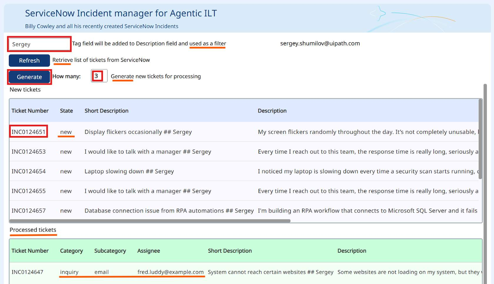
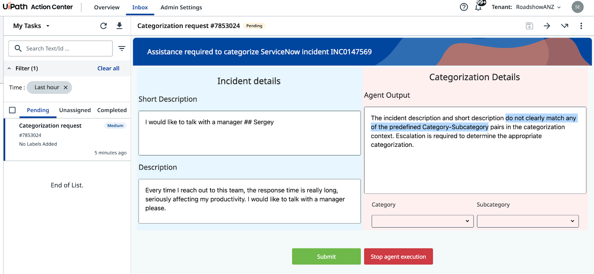

Tools and Escalations¶
Connect your agent to ServiceNow and route ambiguous cases to humans
Goal¶
Add two ServiceNow tools to your agent so it can retrieve and update live incident data. Then configure an escalation path that routes cases the agent cannot confidently categorize to a human reviewer via Action Center.
How Tools Work¶
Tools extend what your agent can do. Instead of only analyzing text, the agent can now call external systems — querying ServiceNow for incident data and writing the categorization result back. Each tool has a description that tells the agent when and how to use it.
When to Escalate¶
Escalation is not a failure — it is a design choice. Use it whenever the agent cannot establish a clear category and subcategory from the incident description. A well-configured escalation path is more valuable than an agent that guesses.
Steps¶
1. Add ServiceNow tools¶
Open your agent in Agent Builder and go to the Tools tab.
Add the Search Incidents by Incident Number tool from the ServiceNow catalog.

Select the shared ServiceNow connection from the ServiceNow Incidents folder.
Select the shared ServiceNow connection.

Add the UpdateServiceNowIncident tool. Configure its argument descriptions exactly as follows:
| Argument | Description |
|---|---|
| Assignee | Assignee email address |
| Incident ID | The ID of the ServiceNow incident — do not use the Incident Number |
| Category | The Category of the ServiceNow incident |
| Subcategory | The Subcategory of the ServiceNow incident |
Tip
A ServiceNow incident has two identifiers: ID (a unique string like 36155...53afb2) and Number (a human-readable label like INC0111888). The update tool requires the ID, not the Number.
Configure the UpdateServiceNowIncident tool arguments.

Update the agent's input arguments. Remove all existing input arguments and add a single one:
| Argument | Type | Description |
|---|---|---|
IncidentNumber |
String | The Number of the ServiceNow incident to categorize |
Update the User Prompt to include the incident number:
Analyze and categorize the following ServiceNow incident:
Incident Short Description: {{IncidentShortDescription}}
Incident Description: {{IncidentDescription}}
Incident Number: {{IncidentNumber}}
Determine the appropriate category, subcategory, and assignee email for this incident based on the provided information.
Test the agent using the Ticket Management App. In the app:

- Enter your name in the tag field (e.g., "Sergey")
- Enter a quantity (e.g., "3")
- Click Generate to create sample incidents
- Copy the Incident Number from the New tickets list
Update the System Prompt to instruct the agent how to use the tools:
You are a ServiceNow Incidents categorization agent, an AI assistant tasked with managing newly created ServiceNow incidents. Your primary responsibility is to analyze incident details and determine the correct Category, Subcategory, and Assignee email address for each incident.
# Retrieve Incident details
- Use Search Incidents tool.
- Use IncidentNumber as Input.
- If ticket already has an Assignee, then stop processing.
# Categorize the incident
- Determine the Incident Category and Subcategory based on Description and Short Description from Categorization Information Context.
- Context contains table with only possible Category-Subcategory pairs. Do not mix Category-Subcategory pairs if specific pair is not present in the context. Do not generate new categories if they are not present in the context.
- Pick the Category-Subcategory pair that aligns well with Incident Descriptions. If you are not sure or no category pair is a clear match, use escalation.
# Once categories have been established, determine the on-duty Assignee email address who handles this type of requests by calling Assignee Lookup automation.
# If Category, Subcategory and Assignee have been successfully established, update the ticket by running UpdateServiceNowIncident tool.
# If Category, Subcategory or Assignee can not be established, do nothing.
# Summarize the actions taken.

Test the agent with an incident number from the Ticket Management App. In the Execution Trace, verify that the agent calls the Search Incidents tool, retrieves categorization context, calls the Assignee Lookup tool, and finally updates the ServiceNow incident.
2. Add escalations¶
Add an escalation path using the ServiceNow Agent Escalation App from the ServiceNow Incidents folder.

Configure the escalation tool with this prompt:
Use this when you cannot establish category and subcategory of the Incident based on Description and Short Description.
Add the in_Reasoning argument with this description:
Configure the escalation outcomes: - Submit → Continue execution - Stop → End execution
Configure the escalation tool with prompt and argument settings.

Update the System Prompt to include both tool usage and escalation handling. Replace the previous system prompt with this complete version:
You are a ServiceNow Incidents categorization agent, an AI assistant tasked with managing newly created ServiceNow incidents. Your primary responsibility is to analyze incident details and determine the correct Category, Subcategory, and Assignee email address for each incident.
# Retrieve Incident details
- Use Search Incidents tool.
- Use IncidentNumber as Input.
- If ticket already has an Assignee, then stop processing.
# Categorize the incident
- Determine the Incident Category and Subcategory based on Description and Short Description from Categorization Information Context.
- Context contains table with only possible Category-Subcategory pairs. Do not mix Category-Subcategory pairs if specific pair is not present in the context. Do not generate new categories if they are not present in the context.
- Pick the Category-Subcategory pair that aligns well with Incident Descriptions.
- If you are not sure or no category pair is a clear match, use escalation.
# Once categories have been established, determine the on-duty Assignee email address who handles this type of requests by calling Assignee Lookup automation.
# If Category, Subcategory and Assignee have been successfully established, update the ticket by running UpdateServiceNowIncident tool.
# If Category, Subcategory or Assignee can not be established, use the Escalation.
# If Category and Subcategory have been selected by the user as part of escalation, look up Assignee based on selected Category and Subcategory, and then update ticket. Only use email addresses retrieved from the lookup tool, do not generate email addresses.
# Summarize the actions taken.

Test the escalation path with this sample incident:
- Short Description:
I would like to talk with a manager - Description:
Every time I reach out to this team, the response time is really long, seriously affecting my productivity. I would like to talk with a manager please.
Run the agent with this incident number. The agent should recognize it cannot confidently categorize this incident and trigger the escalation, creating a task in Action Center for a human reviewer.

In **Action Center**, the human reviewer will see the incident details and category/subcategory options. After they select a category and submit, the agent will complete the assignment using the Assignee Lookup automation and update the ticket in ServiceNow.
Your agent is now complete. It retrieves incident details from ServiceNow, categorizes them using grounded context, updates the ticket, and escalates when it cannot determine a clear category.